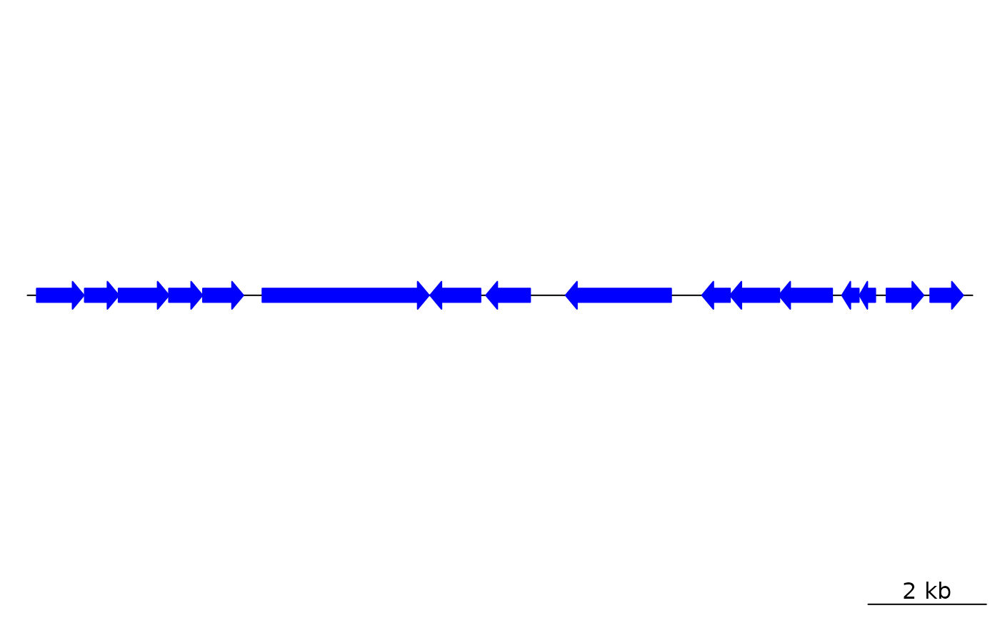

Lists gene_types for dna_seg objects
gene_types.RdReturns a character vector containing the available gene types when plotting
dna_seg features.
Arguments
- auto
Logical. If
TRUE, includes the"auto"gene type in the output, which has plot_gene_map determine what gene type to use automatically.
Details
dna_segs may contain the gene_type column, which determines the shape
of dna_seg features when they are plotted using plot_gene_map.
Elements in this column should either be one of the predefined gene types
returned by this function, or they must refer to a graphical function with
exactly the same name that returns a grob or a gList object.
Examples
## To view pre-coded gene types:
gene_types()
#> [1] "auto" "arrows" "headless_arrows" "blocks"
#> [5] "bars" "points" "text" "lines"
#> [9] "side_blocks" "side_bars" "side_points" "side_text"
#> [13] "side_lines" "introns" "exons" "side_exons"
#> [17] "boundaries"
## Load data
data(barto)
n <- length(gene_types(auto = FALSE))
## Get a small subset from the barto dataset
dna_seg <- barto$dna_segs[[3]][1:n,]
plot_gene_map(list(dna_seg))

## Change gene_types and plot again
dna_seg$gene_type <- gene_types(auto = FALSE)
dna_seg$fill <- rainbow(n)
dna_seg_r <- dna_seg
dna_seg_r$strand <- -dna_seg$strand
## Add an annotation
annot <- annotation(middle(dna_seg), text = dna_seg$gene_type, rot = 45,
col = dna_seg$col)
## Plot
plot_gene_map(list(dna_seg, dna_seg_r), annotations = list(annot, annot),
annotation_height = 5, dna_seg_line = grey(0.7))